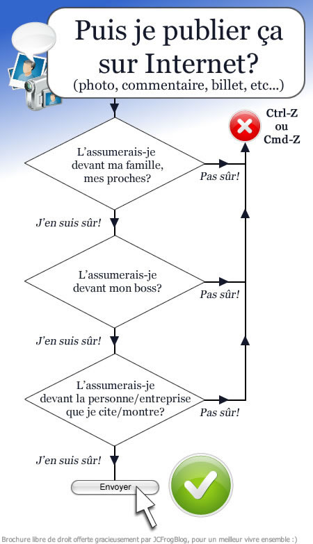

Dans le cas de la propriété incorporelle l'objet du droit de propriété est immatériel.
Il peut apparaître sur un support matériel mais la valeur ne vient pas du support, mais bien de ce qu'il contient.
Ainsi la valeur d'un logiciel de jeu réside dans les lignes de code du jeu lui même et tout le travail de création qu'elles ont supposé, pas dans la valeur du CD où est enregistré le jeu. Le problème de la numérisation est que l'on peut plus facilement reproduire à l'identique sans respecter le droit des auteurs ou les droits voisins. Internet amplifie ce problème puisque l'on peut également diffuser ou télécharger des biens immatériels sans respect des droits y afférant.
Dans ces conditions lorsque l'on crée un site internet il s'agit de savoir ce que l'on va pouvoir y diffuser, les précautions à prendre, les risques encourus en cas de non respect des droits de propriété d'autrui...

La loi encadre l'utilisation d'internet bien au delà de la protection des droits d'auteur. Elle vise à protéger les personnes et leur intégrité y compris morale.
Un exemple est celui du harcèlement sur Internet: https://www.service-p ublic.fr/particuliers/vosdroits/F32239
Il est important de bien cerner les informations recherchées sur le net, mais cela ne suffit pas. Les informations qui circulent sur Internet doivent nécessairement être vérifiées.
C'est le cas des médias en général mais Internet est un lieu où les fausses informations circulent facilement.
La guerre en Syrie ou les attentats ont été l'occasion de la diffusion de rumeurs de ce type: L'article
Il est donc important de vérifier ses sources, de les croiser, d'utiliser des sites qui traquent les "hoax" tels que www.hoaxbuster.com
Des sites très utilisés ne sont pas pour autant fiables à 100% tel que wikipédia.
Par ailleurs l'analyse du nom du site peut être un moyen de s'assurer de la fiabilité.
Par exemple gouv.fr caractérise une part des sites gouvernementaux.
Il est donc important d'identifier qui en est l'auteur du site, s'il existe des moyens de vérifier les compétences de l'auteur, s'il est mis régulièrement à jour...
Vous pouvez également observer la qualité des éléments mis à disposition sur le site et croiser les informations du site avec d'autres sources afin d'en évaluer la fiabilité et la pertinence.
Dans le cas des données chiffrées, en particuliers les données ouvertes donc réutilisables (open data) la fiabilité est à surveiller de près car les erreurs sont fréquentes et parfois juste liées à un espace mal inséré dans un tableau.
Il convient d'être alors vigilant et de procéder par étapes. Il existe des tutoriels spécifiques, en particulier dans le nettoyage et la recherche d'erreur dans les données présentées en tableurs.